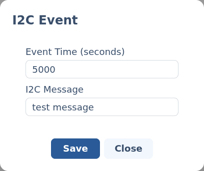

I²C events.
An I²C event sends a message to a device on the node's I²C bus at a point on the timeline — handy for lighting boards, displays and other accessories that speak I²C.
§Add an I²C event
Add an I²C channel to your script (set the device up first under I²C modules), then click its track at the time you want the message sent. The I²C event editor opens.
§The editor

- Event Time (seconds) — where on the timeline the message is sent.
- I2C Message — the payload to send, as free text. What it should contain depends entirely on the device on the other end.
i
The message format is the device's own
AstrOs passes the message through to the addressed I²C device untouched. Check that device's documentation for the command syntax it expects.
Back to Scripting animations.